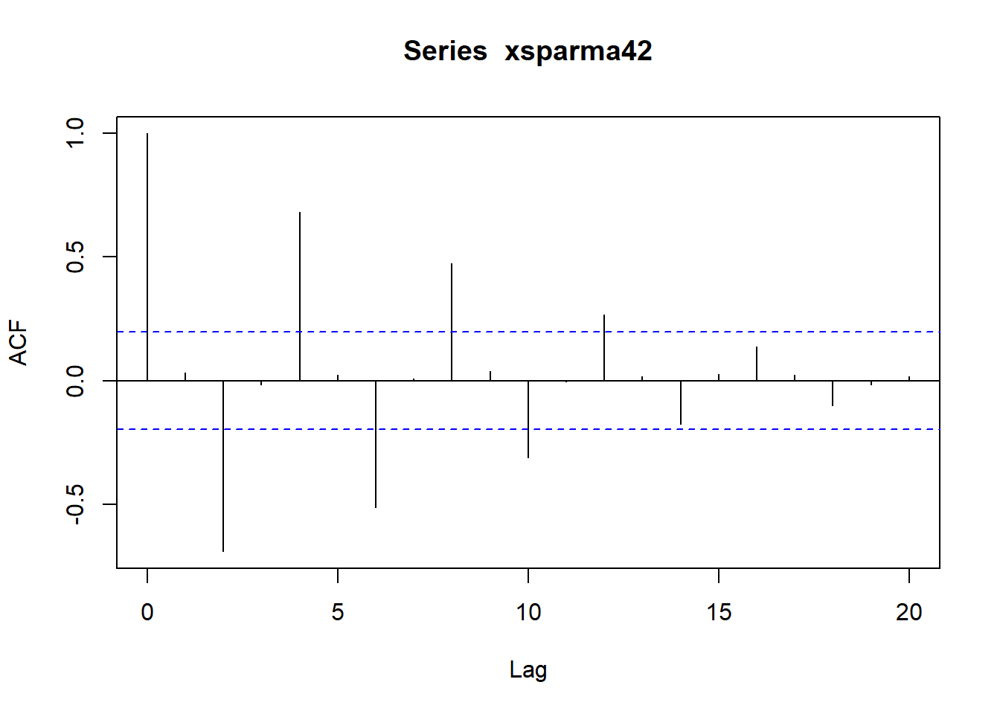

33 R时间序列分析
这里仅仅给出了部分常用的时间序列函数的用法， 更详细的说明参见作者的金融时间序列分析讲义。
33.1 基本概念
设\(\mathbb Z\)为整数集， \(\{X_t, t \in \mathbb Z\}\)中\(X_t\)是随机变量， 称\(\{ X_t \}\)为时间序列。 如果\(\{ X_t \}\)的有限维联合分布不随时间推移而变化， 称\(\{ X_t \}\)为严平稳时间序列。 如果\(\{ X_t \}\)二阶矩有限， 期望和方差不随时间而变化， 两个时间点之间的协方差只依赖于时间距离而不依赖于具体时间， 则称\(\{ X_t \}\)为(宽)平稳时间序列。
如果\(X_t\)是随机向量， 称\(\{ X_t \}\)为多元（或多维）时间序列。
对宽平稳列\(\{ X_t \}\)， 定义其自协方差函数(ACVF)为 \[ \gamma_k = \text{Cov}(X_{t+k}, X_t), \ k \in \mathbb Z . \] 定义其自相关函数(ACF)为 \[ \rho_k = \text{corr}(X_{t+k}, X_t) = \frac{\gamma_k}{\gamma_0}, \ k \in \mathbb Z . \]
偏自相关函数(PACF)定义请参考时间序列分析的教材。
如果\(\sum_k |\gamma_k| < \infty\)， 则平稳列\(\{ X_t \}\)有谱密度\(f(\lambda), \lambda \in [-\pi, \pi]\)， \(f(\lambda)\)是非负可积偶函数，使得 \[\begin{aligned} \gamma_k =& \int_{-\pi}^{\pi} e^{ik\lambda} f(\lambda) \,d\lambda, \ k \in \mathbb Z, \\ f(\lambda) =& \frac{1}{2\pi} \sum_{k=-\infty}^{\infty} \gamma_k e^{-ik\lambda}, \ \lambda \in [-\pi, \pi] . \end{aligned}\]
若平稳列\(\{ \varepsilon_t \}\)的自协方差函数满足\(\gamma_0 = \sigma^2\), \(\gamma_k = 0, k \neq 0\)， 称\(\{ \varepsilon_t \}\)为白噪声列。 如果均值为零，称为零均值白噪声列， 记为WN(0, \(\sigma^2\))。
33.2 时间序列数据类型
时间序列的数据可以保存在R的向量中， 或者保存在R的数据框的一列或几列中， 对应的时间单独保存或者保存在同一数据框中。
也有一些专门的时间序列数据类型， 将时间序列的观测数据与对应的时间同时保存在一个专用的数据结构中。
33.2.1 ts类型
R中最基本的时间序列类型是ts类型， 可以保存一元或者多元时间序列数据， 其中的时间必须是等间隔的， 比如年数据、月数据、季度数据、日数据， 不能在中间有缺失的日期。 生成方法如
其中x是向量或者矩阵，
取矩阵值时矩阵的每一列是一个多元时间序列的一个分量。
frequency对月度数据是12，
对季度数据是4，
对年度数据可以缺省（值为1）。
start=c(2001,1)表示序列开始时间是2001年1月。
如果是年度数据，
用如ts(x, start=2001)即可。
例如：
用函数ts把一个向量转换为时间序列。
如
yd <- ts(
c(4, 8, 7, 7, 3, 1, 8, 9, 8, 6, 3, 5,
5, 8, 2, 5, 9, 2, 5, 2, 3, 2, 2, 4),
frequency=1, start=2001); yd## Time Series:
## Start = 2001
## End = 2024
## Frequency = 1
## [1] 4 8 7 7 3 1 8 9 8 6 3 5 5 8 2 5 9 2 5 2 3 2 2 4ym <- ts(
c(9, 6, 3, 5, 4, 8, 2, 5, 8, 4, 6, 3,
2, 2, 6, 4, 1, 4, 2, 1, 8, 9, 4, 6),
frequency=12, start=c(2001,1)); ym## Jan Feb Mar Apr May Jun Jul Aug Sep Oct Nov Dec
## 2001 9 6 3 5 4 8 2 5 8 4 6 3
## 2002 2 2 6 4 1 4 2 1 8 9 4 6其中yd是年数据，从2001到2024年；
ym是月度数据从2001年1月到2002年12月。
对于多元时间序列，可以用ts函数把一个矩阵转换为ts类型的多元时间序列对象。 用ts.intersect函数和ts.union函数可以把两个或多个时间序列合并为多元时间序列， 时间段取交集或者取并集。
为了使用序列数据进行计算、绘图等， 可以用as.vector把时间序列的数据转换成普通向量。 如：
## [1] 9 6 3 5 4 8 2 5 8 4 6 3 2 2 6 4 1 4 2 1 8 9 4 6## [1] "numeric"在R中已安装的时间列示例数据有美国泛美航空公司1949-1960 的国际航班订票数的月度数据（单位：千人），12年144个月。 用
调入名字空间。类型和属性如下：
## $tsp
## [1] 1949.000 1960.917 12.000
##
## $class
## [1] "ts"这里时间以年为单位， 数据类属为ts， 两个数据值之间的时间间隔为\(1/12\)。
AirPassengers的具体数值：
## Jan Feb Mar Apr May Jun Jul Aug Sep Oct Nov Dec
## 1949 112 118 132 129 121 135 148 148 136 119 104 118
## 1950 115 126 141 135 125 149 170 170 158 133 114 140
## 1951 145 150 178 163 172 178 199 199 184 162 146 166
## 1952 171 180 193 181 183 218 230 242 209 191 172 194
## 1953 196 196 236 235 229 243 264 272 237 211 180 201
## 1954 204 188 235 227 234 264 302 293 259 229 203 229
## 1955 242 233 267 269 270 315 364 347 312 274 237 278
## 1956 284 277 317 313 318 374 413 405 355 306 271 306
## 1957 315 301 356 348 355 422 465 467 404 347 305 336
## 1958 340 318 362 348 363 435 491 505 404 359 310 337
## 1959 360 342 406 396 420 472 548 559 463 407 362 405
## 1960 417 391 419 461 472 535 622 606 508 461 390 432用start()求时间序列的开始点，
end()求时间序列的结束点，
frequency()求采样频率。
如
## [1] 1949 1## [1] 1960 12## [1] 12aggregate()函数可以把月度数据加总成年数据。
如
## Time Series:
## Start = 1949
## End = 1960
## Frequency = 1
## [1] 1520 1676 2042 2364 2700 2867 3408 3939 4421 4572 5140 5714如果加参数FUN=mean可以取均值。
time()函数对ts类型数据返回序列中的每个时间点的时间，
结果是一个和原来时间序列形状相同的时间序列。
cycle()函数对月度数据返回序列每个时间点所在的月份,
结果是和原序列时间点相同的一个时间序列。如
## Jan Feb Mar Apr May Jun Jul Aug Sep Oct Nov Dec
## 1949 1 2 3 4 5 6 7 8 9 10 11 12
## 1950 1 2 3 4 5 6 7 8 9 10 11 12
## 1951 1 2 3 4 5 6 7 8 9 10 11 12
## 1952 1 2 3 4 5 6 7 8 9 10 11 12
## 1953 1 2 3 4 5 6 7 8 9 10 11 12
## 1954 1 2 3 4 5 6 7 8 9 10 11 12
## 1955 1 2 3 4 5 6 7 8 9 10 11 12
## 1956 1 2 3 4 5 6 7 8 9 10 11 12
## 1957 1 2 3 4 5 6 7 8 9 10 11 12
## 1958 1 2 3 4 5 6 7 8 9 10 11 12
## 1959 1 2 3 4 5 6 7 8 9 10 11 12
## 1960 1 2 3 4 5 6 7 8 9 10 11 12window()函数取出时间序列的一段，
如果指定frequency=TRUE还可以仅取出某个月（季度）。
如
## Time Series:
## Start = 1949
## End = 1960
## Frequency = 1
## [1] 112 115 145 171 196 204 242 284 315 340 360 417ts.union可以形成多元时间序列。
33.2.2 xts类型与常用函数
xts也是一种时间序列数据类型， 既可以保存等间隔时间序列数据， 也可以保存不等间隔的时间序列数据， 并且xts类型的数据访问功能更为方便。 读入方法例如
其中x是向量、矩阵或数据框，
date是日期或者日期时间。
x取矩阵或者数据框时每列是一个时间序列。
如
## 载入需要的程辑包：zoo##
## 载入程辑包：'zoo'## The following objects are masked from 'package:base':
##
## as.Date, as.Date.numeric##
## 载入程辑包：'lubridate'## The following object is masked from 'package:base':
##
## date## [,1]
## 2018-01-01 5
## 2018-01-02 5
## 2018-01-03 4
## 2018-01-04 6
## 2018-01-05 4
## 2018-01-06 3
## 2018-01-07 3
## 2018-01-08 3
## 2018-01-09 4
## 2018-01-10 5
## 2018-01-11 5
## 2018-01-12 4如果数据框中一列是日期时间，
其它列是时间序列数据，
就可以用xts()转化成xts类型。
其它时间序列类型可以用as.xts()转换成xts类型，如
## [,1]
## 1月 2001 9
## 2月 2001 6
## 3月 2001 3
## 4月 2001 5
## 5月 2001 4
## 6月 2001 8
## 7月 2001 2
## 8月 2001 5
## 9月 2001 8
## 10月 2001 4
## 11月 2001 6
## 12月 2001 3
## 1月 2002 2
## 2月 2002 2
## 3月 2002 6
## 4月 2002 4
## 5月 2002 1
## 6月 2002 4
## 7月 2002 2
## 8月 2002 1
## 9月 2002 8
## 10月 2002 9
## 11月 2002 4
## 12月 2002 6有了xts类型的变量x后，
可以用coredata(x)返回x的不包含时间的纯数据；
用index(x)返回x的时间标签。
这两个函数很有用。
xts类型支持强大的子集提取功能。
若x是xts类型，
则x[i]可以取出行子集，
x[i,j]可以取出行、列子集，
其中i可以是整数下标，
还可以是包含日期时间的字符串向量，
日期时间类型的向量等。
日期时间字符串的格式为CCYY-MM-DD HH:MM:SS，
而且可以省略后面的一部分，
其含义是取出前面部分能匹配的所有时间点，
这种设计使得取出某年、某月的数据变得十分方便。
如
## [,1]
## 1月 1949 112
## 2月 1949 118
## 3月 1949 132
## 4月 1949 129
## 5月 1949 121
## 6月 1949 135
## 7月 1949 148
## 8月 1949 148
## 9月 1949 136
## 10月 1949 119
## 11月 1949 104
## 12月 1949 118又比如，设x是某个股票的每分钟的数据，
则x["2018-01-18 08"]取出2018-1-18 8:00-9:00之间的所有数据。
也可以用"from/to"的格式指定一个日期时间范围，
而且也不需要开始点和结束点恰好有数据，
from和to的时间精度也不需要与数据的实际采样频率相同。
省略from则从头开始，
省略to则直到末尾。
如
## [,1]
## 2018-01-10 5
## 2018-01-11 5
## 2018-01-12 4first(x, n)和last(x, n)类似于head(x, n)和last(x, n)，
但是对xts对象x，n除了可以取正整数值以外，
还允许用字符串指定时间长度，
允许的单位包括
secs, seconds, mins, minutes, hours, days, weeks, months, quarters, years。
比如，取出开头的三个月：
## [,1]
## 1月 1949 112
## 2月 1949 118
## 3月 1949 132字符串中取负值时表示扣除，如扣除开始的3个月：
## [1] "1月 1949"## [1] "4月 1949"取出的单位可以是比实际采样频率更大的时间单位，
比如，
分钟数据可以用last(x, "1 day")取出最后一天的的所有数据。
但是，取出的单位不能比实际采样频率更小，
比如，日数据不能用小时单位取出。
xts的时间下标也可以是一个日期或者日期时间类型的向量。
支持的类型包括
Date, POSIXct, chron, yearmon, yearqtr, timeDate。
可用index(x)函数来读取或者修改xts类型的时间下标。
用coredata(x)取出不包含日期时间线信息的实际数据。
可以用to.period(x, period)将其xts类型的时间序列降频成period指定的采样频率，
如to.period(x, period="days")。
33.3 基本分析与作图
对ts和xts类型，
仍可用length(), mean(), sd()等函数计算基本的统计量。
对ts类型，plot()函数作曲线图，如：

对xts类型，
plot()函数作时间序列曲线图，
对多元时间序列，
可以选择每个分量单独在一个坐标系中作图也可以重叠在一个坐标系中(用multi.panel = TRUE选项)。
如
xts.ap <- as.xts(AirPassengers)
plot(xts.ap, main="Air Passengers",
major.ticks="years", minor.ticks=NULL,
grid.ticks.on="years",
col="red")对ts类型，可以用as.vector(x)提取不包含日期时间信息的数据，结果是向量；
对xts类型，可以用coredata(x)提取不包含日期时间信息的数据，
结果不论一元还是多元时间序列都是矩阵。
取出数据后，
用通常的统计估计、图形方法可以进行一些探索性分析，
如直方图(hist())、盒形图(boxplot())、QQ图(qqnorm()和qqline())、散点图(plot())等。
stats::lag()可以计算滞后序列，
对ts类型输入，
lag()的作用是序列数值不变，
但是时间标签增加一个单位或者用k=指定的间隔。
所以，
为了得到通常理解的滞后1序列，应该使用stats::lag(x, k=-1)，
如
## Time Series:
## Start = 2002
## End = 2006
## Frequency = 1
## [1] 1 2 3 4 5diff(x)计算一阶差分，
diff(x, lag, differences)计算滞后为lag的阶数位differences的差分。
acf和pacf函数可以作自相关、自协方差和偏自相关函数图，
并可返回这些函数的估计值。
参见33.4.2.1。
filter函数可以计算递推的或卷积的滤波。
arima可以拟合ARIMA模型。
arima.sim可以模拟生成ARIMA模型的数据。
33.4 ARIMA建模和模拟
33.4.1 模型公式
AR(\(p\))模型（零均值）： \[\begin{aligned} X_t = a_1 X_{t-1} + a_2 X_{t-2} + \dots + a_p X_{t-p} + \varepsilon_t, \ \{ \varepsilon_t \} \sim \text{WN}(0, \sigma^2), \end{aligned}\] 参数为\(a_1, \dots, a_p, \sigma^2\)， 满足 \[ A(z) = 1 - a_1 z - \dots - a_p z^p \neq 0, \ \forall |z| \leq 1, \ z \in \mathbb C, \] \(\mathbb C\)为复数域。
可逆MA(\(q\))模型（零均值）： \[\begin{aligned} X_t = \varepsilon_t + b_1 \varepsilon_{t-1} + \dots + b_1 \varepsilon_{t-q}, \ \{ \varepsilon_t \} \sim \text{WN}(0, \sigma^2), \end{aligned}\] 满足 \[ B(z) = 1 + b_1 z + \dots + b_q z^q \neq 0, \ \forall |z| \leq 1, \ z \in \mathbb C . \]
零均值可逆ARMA(\(p,q\))模型： \[\begin{aligned} X_t = a_1 X_{t-1} + a_2 X_{t-2} + \dots + a_p X_{t-p} + \varepsilon_t + b_1 \varepsilon_{t-1} + \dots + b_1 \varepsilon_{t-q}, \ \{ \varepsilon_t \} \sim \text{WN}(0, \sigma^2) . \end{aligned}\]
记一阶差分为\(\Delta X_t = X_t - X_{t-1}\)， \(d\)阶差分为\(\Delta^d X_t = \Delta(\Delta^{d-1} X_t)\)， 事实上 \[\begin{aligned} \Delta^d X_t = \sum_{j=0}^d C_d^j (-1)^j X_{t-j} . \end{aligned}\] 其中\(C_d^j\)是\(k\)取\(j\)的组合个数。
ARIMA(\(p,d,q\))模型： 如果\(\{ \Delta^d X_t \}\)满足零均值可逆ARMA(\(p,q\))模型， 就称\(\{ X_t \}\)满足ARIMA(\(p,d,q\))模型。
33.4.2 模拟
用arima.sim()函数可以模拟生成ARIMA模型的数据，
也可以用来模拟AR、MA、ARMA。
arima.sim()输出ts类型的时间序列，
并且在模型有一阶单位根时会比要求的个数多输出一个值，
第一个值为初值0。
33.4.2.1 AR(4)模拟例子
考虑如下的AR(4)模型：
\[\begin{align} X_t =& -0.9 X_{t-1} - 1.4 X_{t-2} - 0.7 X_{t-3} - 0.6 X_{t-4} \\ & + \varepsilon_t + 0.5\varepsilon_{t-1} - 0.4\varepsilon_{t-2}, \quad t\in \mathbb Z, \tag{33.1} \end{align}\] 其中\(\{\varepsilon_t \}\)为WN(0, 4)。
用如下程序模拟生成长度为\(N=100\)的样本：
作时间序列图：
作ACF图：
作PACF图（偏自相关函数图）：

acf(x)加type选项和plot=FALSE选项可以返回估计的自协方差函数、自相关函数、偏自相关函数。
如：
## [1] 1.0000 -0.2984 -0.5258 0.3435 0.0213 0.0134 0.0241 -0.2397 0.1273
## [10] 0.1889 -0.1493## [1] 11.6502 -3.4762 -6.1260 4.0017 0.2478 0.1566 0.2809 -2.7920 1.4831
## [10] 2.2008 -1.7390## [1] -0.2984 -0.6750 -0.2434 -0.5189 -0.0533 -0.0744 -0.1345 -0.1602 -0.1043注意自相关函数、自协方差函数都是从滞后0开始（即\(\rho_0\), \(\gamma_0\)）， 而偏自相关函数从滞后1开始。
可以用polyroot()计算多项式的所有复根，
输入是从零次项到最高次项的系数。
可以用Mod()或abs()求复数模，如：
## [1] 1.134452 1.137989 1.137989 1.134452四个根都在单位圆外， 满足AR模型的最小相位条件。
33.4.2.2 MA(2)模拟例子
考虑如下的MA(2)模型：
\[\begin{align} X_t =& \varepsilon_t + 0.5\varepsilon_{t-1} - 0.4\varepsilon_{t-2}, \quad t\in \mathbb Z, \tag{33.2} \end{align}\] 其中\(\{\varepsilon_t \}\)为WN(0, 4)。
模拟生成长度为100的样本，作时间序列图， ACF，PACF图：

33.4.2.3 ARMA(4,2)模拟例子
考虑如下的ARMA(4,2)模型：
\[\begin{align} X_t =& -0.9 X_{t-1} - 1.4 X_{t-2} - 0.7 X_{t-3} - 0.6 X_{t-4} \\ =& \varepsilon_t + 0.5\varepsilon_{t-1} - 0.4\varepsilon_{t-2}, \quad t\in \mathbb Z, \tag{33.3} \end{align}\] 其中\(\{\varepsilon_t \}\)为WN(0, 4)。
用如下程序模拟生成长度为\(N=100\)的样本， 并作时间序列图、ACF图、PACF图：
33.4.3 AR建模
stats::ar(x, method="mle")可以用最大似然估计方法估计模型参数并用AIC定阶。
如：
##
## Call:
## ar(x = xar4, method = "mle")
##
## Coefficients:
## 1 2 3 4
## -0.7573 -1.2317 -0.5534 -0.5525
##
## Order selected 4 sigma^2 estimated as 3.712结果定阶为4阶， 模型可以写成： \[\begin{aligned} X_t =& -0.7573 X_{t-1} - 1.2317 X_{t-2} - 0.5534 X_{t-3} - 0.5525 X_{t-4} + \varepsilon_t, \\ & \{\varepsilon_t \} \sim \text{WN}(0, 3.712) . \end{aligned}\]
ar()的结果是一个列表，
元素order是阶\(p\)估计，
元素ar是\((a_1, \dots, a_p)\)估计向量，
元素var.pred是\(\sigma^2\)估计。
33.4.4 ARMA建模
stats::arima()可以用最大似然方法估计AR、MA、ARMA和ARIMA模型，
需要人为指定\((p,d,q)\)值。
如：
##
## Call:
## arima(x = 100 + xarma42, order = c(4, 0, 2))
##
## Coefficients:
## ar1 ar2 ar3 ar4 ma1 ma2 intercept
## -0.6324 -1.0668 -0.4163 -0.4469 0.3191 -0.6423 99.9989
## s.e. 0.1195 0.1384 0.1350 0.1080 0.1237 0.1267 0.0371
##
## sigma^2 estimated as 3.582: log likelihood = -209.2, aic = 434.4模型可以表示为： \[\begin{aligned} EX_t =& 99.9989 \\ Y_t =& X_t - E X_t \\ Y_t =& -0.6324 X_{t-1} - 1.0668 X_{t-2} - 0.4163 X_{t-3} - 0.4469 X_{t-4} + \varepsilon_t + 0.3191 \varepsilon_{t-1} - 0.6423 \varepsilon_{t-2}, \\ \{\varepsilon_t \} \sim& \text{WN}(0, 3.582) \end{aligned}\] 另外，AIC值为434.4。 可以试验不同的阶， 找到AIC最低的模型。
arima()的结果是一个列表，
其中coef是
\((a_1, \dots, a_p, b_1, \dots, b_q, \mu)\)的估计。
sigma2是\(\sigma^2\)的估计。
var.coef是\((a_1, \dots, a_p, b_1, \dots, b_q, \mu)\)的估计的方差阵估计，
其对角线的平方根是相应的标准误差。
residuals是估计残差，
长度与输入时间序列相同。
33.4.5 模型诊断
将arima()的输出结果输入到tsdiag()函数，
可以进行模型诊断，
结果包括标准化残差、残差的ACF、残差的Ljung-Box白噪声检验p值，
检验对多个滞后值计算，
p值高于横虚线(0.05线)表示模型适合。
33.4.6 白噪声检验
Ljung-Box检验是常用的白噪声检验，
零假设为数据来自白噪声列。
Box.test(x, type="Ljung-Box", lag=m)执行Ljung-Box白噪声检验,
m是用到的自相关函数个数。
如：
##
## Box-Ljung test
##
## data: xarma42
## X-squared = 80.473, df = 10, p-value = 4.056e-13如果要对ARMA或者ARIMA建模的残差进行白噪声检验，
需要加fitdf选项，取值为\(p+q\)，如：
##
## Box-Ljung test
##
## data: armares$residuals
## X-squared = 6.2553, df = 4, p-value = 0.1809在0.05水平下结果不显著， 提示模型是合适的。
33.4.7 稀疏系数估计
arima函数允许指定某些系数固定为预先确定的值，
不从数据中估计。
例如，考虑如下的稀疏系数的ARMA(4,2)模型
\[\begin{aligned} X_t =& 100 + Y_t, \\ Y_t =& 0.7 X_{t-4} + \varepsilon_t - 0.4 \varepsilon_{t-2},\\ \varepsilon_t \sim& \text{WN}(0, 4) \end{aligned}\]
产生模拟数据：
set.seed(101)
xsparma42 <- 100 + arima.sim(
model=list(
ar=c(0, 0, 0, 0.7),
ma=c(0, -0.4)),
n = 100,
sd = sqrt(4) )
plot(xsparma42)
拟合ARMA(4,2)模型：
##
## Call:
## arima(x = xsparma42, order = c(4, 0, 2))
##
## Coefficients:
## ar1 ar2 ar3 ar4 ma1 ma2 intercept
## 0.0761 -0.0908 0.0078 0.6437 -0.0276 -0.4091 99.7500
## s.e. 0.1955 0.1963 0.1296 0.1314 0.2733 0.2860 0.3048
##
## sigma^2 estimated as 4.066: log likelihood = -213.21, aic = 442.41计算各个系数估计除以标准误差的比值， 在系数为0的条件下近似服从标准正态分布：
zstat.arima <- function(arimares){
with(
arimares, {
y <- numeric(length(coef))
names(y) <- names(coef)
y[mask] <- coef[mask] / sqrt(diag(var.coef))
y
})
}
round(zstat.arima(spres1), 2)## ar1 ar2 ar3 ar4 ma1 ma2 intercept
## 0.39 -0.46 0.06 4.90 -0.10 -1.43 327.21当近似Z统计量值在正负2之间时， 可认为相应的系数等于零， 用如下程序估计稀疏系数的ARMA模型：
spres2 <- arima(
xsparma42, order = c(4,0,2),
fixed = c(0, 0, 0, NA, 0, NA, NA),
transform.pars = FALSE)
spres2##
## Call:
## arima(x = xsparma42, order = c(4, 0, 2), transform.pars = FALSE, fixed = c(0,
## 0, 0, NA, 0, NA, NA))
##
## Coefficients:
## ar1 ar2 ar3 ar4 ma1 ma2 intercept
## 0 0 0 0.6837 0 -0.5035 99.7432
## s.e. 0 0 0 0.0757 0 0.0927 0.2996
##
## sigma^2 estimated as 4.108: log likelihood = -213.71, aic = 435.42## ar1 ar2 ar3 ar4 ma1 ma2 intercept
## 0.00 0.00 0.00 9.03 0.00 -5.43 332.96为了指定某些系数，
在arima中用fixed=选项，
需要指定的系数就输入指定的值，
需要从数据中估计的值就输入NA，
次序按arima显示结果时各个系数的次序。
33.4.8 单位根检验
单位根检验是一种平稳性检验， 零假设是有单位根， 即不平稳； 对立假设是平稳。 经常使用增强的Dickey-Fuller检验(ADF检验)。
fUnitRoots包的adfTest()函数可以执行单位根ADF检验。
tseries包的adf.test()函数也可以执行单位根ADF检验。
注意，ADF检验都是在拒绝\(H_0\)（显著）时否认有单位根， 不显著时承认有单位根。
例如，对模拟的ARMA(4,2)序列数据做单位根检验：
## Warning in fUnitRoots::adfTest(100 + xarma42, lags = 8, type = "c"): p-value
## smaller than printed p-value##
## Title:
## Augmented Dickey-Fuller Test
##
## Test Results:
## PARAMETER:
## Lag Order: 8
## STATISTIC:
## Dickey-Fuller: -5.2017
## P VALUE:
## 0.01
##
## Description:
## Fri Mar 27 17:22:20 2020 by user: user在0.05水平下显著，
说明没有单位根。
函数中的lags参数是用来作为对立假设的AR模型的阶。
可以先尝试拟合AR模型，
并用适当方法定阶，
然后再进行ADF检验。
对模拟的ARIMA(4,1,2)序列数据检验：
##
## Title:
## Augmented Dickey-Fuller Test
##
## Test Results:
## PARAMETER:
## Lag Order: 8
## STATISTIC:
## Dickey-Fuller: -1.539
## P VALUE:
## 0.4856
##
## Description:
## Thu Apr 02 17:17:18 2020 by user: user在0.05水平下结果不显著， 说明有单位根。
选项type选择基础模型，
可以取：
"nc"，表示没有漂移项或截距项；"c"，表示带有一个漂移项或截距项；"ct"，表示基础模型中带有\(a + bt\)这样的线性项。
33.4.9 ARMA模型的一些自定义函数
这里列出一些与ARMA模型等时间序列理论有关的函数， 比如， 从模型参数计算Wold系数， 解Yule-Walker方程， 从模型参数计算协方差函数， 逆相关函数计算， ARMA谱密度绘图， MA矩估计， Levinson递推， 递推预测， 等等。 欠缺逆相关法等少数的程序。
AR模型理论谱密度图：
ar.true.spectrum <- function(
a, ngrid=256, sigma=1, plot.it=TRUE,
title="AR True Spectral Density"){
p <- length(a)
freqs <- seq(from=0, to=pi, length=ngrid)
spec <- numeric(ngrid)
for(ii in seq(ngrid)){
spec[ii] <- sigma^2 / (2*pi) /
abs(1 - sum(complex(mod=a, arg=freqs[ii]*seq(p))))^2
}
if(plot.it){
plot(freqs, spec, type='l',
main=title,
xlab="frequency", ylab="spectral density",
axes=FALSE)
axis(2)
axis(1, at=(0:6)/6*pi,
labels=c(0, expression(pi/6),
expression(pi/3), expression(pi/2),
expression(2*pi/3), expression(5*pi/6), expression(pi)))
}
list(frequencies=freqs, spectrum=spec,
ar.coefficients=a, sigma=sigma)
}MA理论谱密度图：
ma.true.spectrum <- function(
a, ngrid=256, sigma=1,
tit="True MA Spectral Density",
plot.it=TRUE){
p <- length(a)
freqs <- seq(from=0, to=pi, length=ngrid)
spec <- numeric(ngrid)
for(ii in seq(ngrid)){
spec[ii] <- 1 + sum(complex(mod=a, arg=freqs[ii]*seq(p)))
}
spec = sigma^2 / (2*pi) * abs(spec)^2
if(plot.it){
plot(freqs, spec, type='l',
main=tit,
xlab="frequency", ylab="spectrum",
axes=FALSE)
axis(2)
axis(1, at=(0:6)/6*pi,
labels=c(0, expression(pi/6),
expression(pi/3), expression(pi/2),
expression(2*pi/3), expression(5*pi/6), expression(pi)))
box()
}
invisible(list(frequencies=freqs, spectrum=spec,
ma.coefficients=a, sigma=sigma))
}利用李雷的矩阵极限方法对MA模型参数作矩估计。 输入\(\gamma_0, \gamma_1, \dots, \gamma_q\)， 输出MA参数\(b_1, \dots, b_q, \sigma^2\)的估计。
ma.solve <- function(gms, k=100){
q <- length(gms)-1
if(q==1){
rho1 <- gms[2] / gms[1]
b <- (1 - sqrt(1 - 4*rho1^2))/(2*rho1)
s2 <- gms[1] / (1 + b^2)
return(list(b=b, s2=s2))
}
A <- matrix(0, nrow=q, ncol=q)
for(j in seq(2,q)){
A[j-1,j] <- 1
}
cc <- numeric(q); cc[1] <- 1
gamma0 <- gms[1]
gammas <- numeric(q+k)
gammas[1:(q+1)] <- gms
gamq <- gms[-1]
Gammak <- matrix(0, nrow=k, ncol=k)
for(ii in seq(k)){
for(jj in seq(k)){
Gammak[ii,jj] <- gammas[abs(ii-jj)+1]
}
}
Omk <- matrix(0, nrow=q, ncol=k)
for(ii in seq(q)){
for(jj in seq(k)){
Omk[ii,jj] <- gammas[ii+jj-1+1]
}
}
PI <- Omk %*% solve(Gammak, t(Omk))
s2 <- gamma0 - c(t(cc) %*% PI %*% cc)
b <- 1/s2 * c(gamq - A %*% PI %*% cc)
return(list(b=b, s2=s2))
}ARMA理论谱密度图：
arma.true.spectrum <- function(
a, b, ngrid=256, sigma=1,
tit="True ARMA Spectral Density",
plot.it=TRUE){
p <- length(a)
q <- length(b)
freqs <- seq(from=0, to=pi, length=ngrid)
spec1 <- numeric(ngrid)
spec2 <- numeric(ngrid)
for(ii in seq(ngrid)){
spec1[ii] <- 1 + sum(complex(mod=b, arg=freqs[ii]*seq(q)))
spec2[ii] <- 1 - sum(complex(mod=a, arg=freqs[ii]*seq(p)))
}
spec = sigma^2 / (2*pi) * abs(spec1)^2 / abs(spec2)^2
if(plot.it){
plot(freqs, spec, type='l',
main=tit,
xlab="frequency", ylab="spectrum",
axes=FALSE)
axis(2)
axis(1, at=(0:6)/6*pi,
labels=c(0, expression(pi/6),
expression(pi/3), expression(pi/2),
expression(2*pi/3), expression(5*pi/6), expression(pi)))
}
box()
invisible(list(frequencies=freqs, spectrum=spec,
ar.coefficients=a, ma.coefficients=b,
sigma=sigma))
}从ARMA模型参数计算Wold系数，
n是需要计算的个数：
arma.Wold <- function(n, a, b=numeric(0)){
p <- length(a)
q <- length(b)
arev <- rev(a)
psi <- numeric(n)
psi[1] <- 1
for(j in seq(n-1)){
if(j <= q) bj=b[j]
else bj=0
psis <- psi[max(1, j+1-p):j]
np <- length(psis)
if(np < p) psis <- c(rep(0,p-np), psis)
psi[j+1] <- bj + sum(arev * psis)
}
psi
}给定ARMA模型参数，
利用Wold系数计算自协方差函数。
这里对Wold系数进行了截断，
nw值越大，
使用的Wold系数越多，
结果越精确，
但计算量也越大。
事实上，
对\(k \geq q+1\)，
可以用Yule-Walker方程递推计算\(\gamma_k\)。
arma.gamma.by.Wold <- function(n, a, b=numeric(0), sigma=1, nw=100){
nn <- n + nw
psi <- arma.Wold(nn, a, b, nw=nw)
gam <- numeric(n)
for(ii in seq(0, n-1)){
gam[ii+1] <- sum(psi[1:(nn-ii)] * psi[(ii+1):nn])
}
gam <- (sigma^2) * gam
gam
}用矩估计法求ARMA参数估计， MA部分用李雷的矩阵极限算法。
arma.solve <- function(gms, p, q){
Gpq <- matrix(0, nrow=p, ncol=p)
for(ii in seq(p)) for(jj in seq(p)){
Gpq[ii,jj] <- gms[abs(q + ii - jj)+1]
}
gs <- gms[(q+1+1):(q+p+1)]
a <- solve(Gpq, gs)
aa <- c(-1, a)
gys <- numeric(q+1)
for(k in seq(0, q)){
gys[k+1] <- sum(c(outer(0:p,0:p,
function(ii,jj) aa[ii+1] * aa[jj+1]
* gms[abs(k+jj-ii)+1])))
}
res <- ma.solve(gys)
b <- res$b
sigma <- sqrt(res$s2)
list(a=a, b=b, sigma=sigma)
}ARMA模型矩估计法，其中MA部分用逆相关函数法的R程序：
## 用输入的$\gamma_0, \dots, \gamma_p$求解AR(p)模型参数
ar.yw <- function(gam){
p <- length(gam) - 1
G <- matrix(0, p, p)
for(i in 1:p){
for(j in 1:p){
G[i,j] = gam[1 + abs(i-j)]
}
}
gri <- gam[-1]
a <- solve(G, gri)
sig2 <- sum(gam * c(1, -a))
list(ar = a, var.pred = sig2)
}
## 从AR模型参数计算逆相关函数
ar_racv <- function(a, sig2){
p <- length(a)
a <- c(-1, a)
a2 <- c(a, numeric(p+1))
res <- numeric(p+1)
for(k in seq(0, p, by=1)){
res[k+1] <- sum(a * a2[(k+1):(k+p+1)])
}
res/sig2
}
## 用长阶自回归方法和逆相关函数方法估计MA模型
ma.solve.racv <- function(x, q=1){
## 拟合长阶自回归，用来估计逆自协方差函数
n <- length(x)
plar <- round(sqrt(n))
if(plar < q) plar <- q
mod1 <- ar(x, aic = FALSE, order.max = plar, method="yule-walker")
a <- mod1$ar
sigsq <- mod1$var.pred
gamr <- ar_racv(a, sigsq)[1:(q+1)]
res2 <- ar.yw(gamr)
b <- -res2$ar
sig2 <- 1/res2$var.pred
list(ma = b, var.pred = sig2)
}
## 用矩估计法估计ARMA，其中MA部分用逆相关函数法
## gms输入$\gamma_k$, $k=0,1,\dots,p+q$。
arma.moment.racv <- function(x, p=1, q=1){
n <- length(x)
pmax <- round(sqrt(n))
if(pmax < p+q) pmax <- p+q
## 计算样本自协方差函数
gms <- c(acf(x, lag.max=pmax+p, type="covariance", plot=FALSE)$acf)
## 求解AR部分
Gpq <- matrix(0, nrow=p, ncol=p)
for(ii in seq(p)) for(jj in seq(p)){
Gpq[ii,jj] <- gms[abs(q + ii - jj)+1]
}
gs <- gms[(q+1+1):(q+p+1)]
a <- solve(Gpq, gs)
aa <- c(-1, a)
## 从已有的自协方差估计与AR参数估计，计算MA部分的$\gamma_j, j=0,1,\dots,pmax$。
gys <- numeric(pmax+1)
for(k in seq(0, pmax)){
gys[k+1] <- sum(c(outer(0:p,0:p,
function(ii,jj) aa[ii+1] * aa[jj+1]
* gms[abs(k+jj-ii)+1])))
}
## 从MA部分的自协方差估计，拟合长阶自回归模型
res1 <- ar.yw(gys)
## 求MA部分的逆相关函数
gamr <- ar_racv(res1$ar, res1$var.pred)[1:(q+1)]
## 利用逆相关函数为输入求解YW方程，得到MA参数估计
res2 <- ar.yw(gamr)
b <- -res2$ar
sig2 <- 1/res2$var.pred
##sig2 <- gys[1] / sum(c(1, b)^2)
list(ar=a, ma=b, var.pred=sig2)
}时间序列递推预测系数计算。
输入一个\(n\times n\)矩阵表示序列非平稳，
输入为观测向量的协方差阵；
输入一个向量表示序列平稳，
输入为平稳列的自协方差函数值\(\gamma_0, \gamma_1, \dots, \gamma_{n-1}\)。
输出是用新息预报方法对\(Y_1, Y_2, \dots, Y_n\)进行一步最佳线性预报的系数和均方误差。
结果为列表，
元素theta是\((n-1) \times (n-1)\)矩阵，
第\(k\)行为预报\(Y_{k+1}\)的样本新息系数：
\[
\hat Y_{k+1} = \theta[k,1] \cdot W_k + \theta[k,2] \cdot W_{k-1} + \dots + \theta[k,k] \cdot W_1
\]
\[
W_1=Y_1, W_k = Y_k - \hat Y_k, k=2,3,\dots,n .
\]
元素nu是\(n\)个预报均方误差，
nu[k]是预报\(Y_k\)的均方误差。
### 非平稳时间序列新息递推预测的系数和一步预测误差方差计算。
### 输入：
### Gam --- 如果序列非平稳，为自协方差矩阵n*n
### 如果序列平稳，为自协方差列\gamma_0, \gamma_1, \dots, \gamma_{n-1}
### 输出：
### 用新息预报方法对Y_1, Y_2, \dots, Y_n进行一步最佳线性预报的系数和均方误差。
### theta -- (n-1)*(n-1)矩阵。第k行为预报Y_{k+1}的样本新息系数：
### \hat Y_{k+1} = theta[k,1]*W_k + theta[k,2]*W_{k-1} + \dots + theta[k,k]*W_1
### W_1=Y_1, W_k = Y_k - \hat Y_k, k=2,3,\dots,n
### nu --- n个元素，nu[k]为预报Y_k的均方误差。
ts.ipred.coef <- function(Gam){
if(!is.matrix(Gam)){
n <- length(Gam)
Gam <- outer(1:n, 1:n,
function(i,j) Gam[abs(i-j)+1])
} else {
n <- nrow(Gam)
}
## X_1, X_2, \dots, X_{n-1}的自协方差矩阵为Gam
## 新息预报递推
theta <- matrix(0, n-1, n-1)
nu <- numeric(n)
nu[1] <- Gam[1,1]
theta[1,1] <- Gam[2,1] / Gam[1,1]
nu[2] <- Gam[2,2] - theta[1,1]^2 * nu[1]
for(k in 2:(n-1)){
theta[k, k] <- Gam[k+1,0+1] / nu[1]
for(j in 1:(k-1)){
theta[k,k-j] <- (Gam[k+1,j+1]
- sum(theta[j, j:1]*theta[k,k:(k-j+1)]*nu[1:j])) /
nu[j+1]
}
nu[k+1] <- Gam[k+1,k+1] - sum(theta[k,k:1]^2 * nu[1:k])
}
list(theta=theta, nu=nu)
}随时间序列进行递推预报(新息预报)，
假定已知自协方差列（平稳时）或自协方差阵（非平稳时）。
输入x是时间序列观测数据，
可以包含要预报的部分作为对比。
输入gams向量或矩阵。向量时为平稳序列的自协方差列，
矩阵时为非平稳时间序列的自协方差阵。
输入demean表示是否减去均值再预报。
输入end表示预报到哪个时间点，
这受到gams大小的限制，只能预报到与自协方差阵阶数相同的时间点。
conf是计算预测区间的置信度。
ts.ipred <- function(x, gams, demean=FALSE, end=length(x), conf=0.95){
stationary <- !is.matrix(gams)
res1 <- ts.ipred.coef(gams)
theta <- res1$theta
nu <- res1$nu
if(demean) {xmean <- mean(x); x <- x - xmean}
if(!stationary) end <- length(nu)
W <- numeric(end)
pred <- numeric(end)
lb <- numeric(end)
ub <- numeric(end)
lam <- qnorm(1 - (1-conf)/2)
pred[1] <- 0
W[1] <- x[1]
for(n in 1:(end-1)){
pred[n+1] <- sum(theta[n, n:1]*W[1:n])
W[n+1] <- x[n+1] - pred[n+1]
}
lb <- pred - lam*sqrt(nu[1:end])
ub <- pred + lam*sqrt(nu[1:end])
if(demean){
pred <- xmean + pred
lb <- xmean + lb
ub <- xmean + ub
}
list(x=x, pred=pred, lb=lb, ub=ub, conf=conf)
}对平稳列，
已知自协方差列时用Levinson递推计算逐个一步预报系数(Y-W系数)和一步预测误差方差。
输入gams[1:n] 为\(\gamma_k, k=0,1,\dots,n-1\)。
输出是对\(Y_1, Y_2, \dots, Y_{n}\)做滚动向前一步预报所需的系数和均方误差。
结果中元素coef.YW是\((n-1)\times (n-1)\)矩阵，
第\(k\)行的\(1:k\)元素为
\(a_{k,1}, a_{k,2}, \dots, a_{k,k}\)，
用来预报\(Y_{k+1}\):
\[
L(Y_{k+1} | Y_1, Y_2, \dots, Y_k)
= a_{k,1} Y_{k} + a_{k,2} Y_{k-1} + \dots + a_{k,k} Y_1,
\ k=1,2,\dots,n-1
\]
\[
L(Y_1| ) = 0
\]
结果中sigmasq是长度为\(n\)的向量，
保存预报\(Y_1, Y_2, \dots, Y_n\)的一步预报均方误差。
Levinson.coef <- function(gams){
n <- length(gams)
## ayw保存Y-W系数a[i,j], i=1,2,\dots,n-1, j=1,2,\dots,i
ayw <- matrix(0, n-1, n-1)
## ss保存一步预报误差方差
ss <- numeric(n)
ss[1] <- gams[0+1] ## 预报Y_1的均方误差, 等于\gamma_0
ayw[1,1] <- gams[1+1] / gams[0+1] ## 用Y_1预报Y_2的系数
ss[2] <- ss[1] * (1 - ayw[1,1]^2) ## 用Y_1预报Y_2的均方误差
if(n>2) for(k in 1:(n-2)){
## 用Y_1, \dots, Y_{k+1}预报Y_{k+2}的系数
ayw[k+1,k+1] <- (gams[(k+1)+1] - sum(ayw[k,1:k] * gams[(k:1)+1])) / ss[k+1]
ayw[k+1,1:k] <- ayw[k, 1:k] - ayw[k+1,k+1]*ayw[k, k:1]
## 用Y_1, \dots, Y_{k+1}预报Y_{k+2}的均方误差
ss[k+2] <- ss[k+1] * (1 - ayw[k+1,k+1]^2)
}
list(coef.YW=ayw, sigmasq=ss)
}对平稳列用Levinson计算一步预测系数(Yule-Walker系数)进行一步预测的程序。
设已知自协方差列。
输入x是平稳时间序列观测数据\(X_1, \dots, X_n\)。
输入gams是理论自协方差列\(\gamma_0, \gamma_1, \dots, \gamma_{m-1}\),
\(m \leq n\)。
输入max.lag表示最多使用多少个历史值预报。
缺省使用所有历史值，或理论自协方差列个数减一。
输入end表示计算一步预测到第end时刻为止，
默认对每个时间点计算一步预测。
输入demean选择预报时是否中心化。
输入conf是计算一步预测区间时的置信度。
输出为一个列表，
元素x是输入的原始时间序列，
pred是时间序列每个点的一步预报，
长度与x相同。
lb和ub是每个点的预测下限和上限。
sts.pred.levinson <- function(x, gams, max.lag=length(gams)-1,
end=length(x),
demean=FALSE, conf=0.95){
n <- length(x)
m <- length(gams)
if(max.lag > m-1){
msg <- paste('可用最大历史长度', max.lag,
'大于可用理论自协方差个数减一', m-1)
stop(msg)
}
if(demean) {
xmean <- mean(x)
x[] <- x - xmean
}
pred <- numeric(end)
lb <- numeric(end)
ub <- numeric(end)
lam <- qnorm(1 - (1-conf)/2)
res1 <- Levinson.coef(gams)
ayw <- res1$coef.YW ## (m-1)*(m-1)矩阵，第k行用于k个历史进行一步预报。
ss <- res1$sigmasq ## 长度为m的向量，第k个为用k-1个历史预报下一步的均方误差。
pred[1] <- 0
for(k in seq(end-1)){
if(k <= max.lag) {
pred[k+1] <- sum(ayw[k, 1:k] * x[k:1])
} else {
pred[k+1] <- sum(ayw[max.lag, 1:max.lag] * x[k:(k-max.lag+1)])
}
}
if(demean) pred[] <- pred + xmean
ss2 <- c(ss[1:min(end,max.lag+1)],
rep(ss[max.lag+1], end-min(end,max.lag+1)))
lb[] <- pred - lam*sqrt(ss2)
ub[] <- pred + lam*sqrt(ss2)
list(x=x, pred=pred, lb=lb, ub=ub, conf=conf)
}周期图计算：
direct.periodogram <- function(
y, freqs=seq(0,pi,length=101), demean=FALSE){
N <- length(y)
if(demean) y <- y - mean(y)
II <- numeric(length(freqs))
for(j in seq(along=freqs)){
II[j] <- 1/(2*pi*N)*Mod(sum(y * complex(mod=1, arg=freqs[j]*seq(1,N))))^2
}
list(frequencies=freqs, spectrum=II)
}Daniell加窗谱估计：
spec.Daniell <- function(
y, freqs=seq(0,pi,length=101),
M = round(2*sqrt(length(y))),
demean=FALSE){
N <- length(y)
if(demean) y <- y - mean(y)
spec <- numeric(length(freqs))
gams <- c(acf(y, lag.max=N-1,
type="covariance", plot=FALSE)$acf)
jjs <- seq(N-1)
for(j in seq(along=freqs))
spec[j] <- 1/(2*pi)*(gams[1] +
2*sum(gams[jjs+1] *
( sin(jjs*pi/M) / (jjs*pi/M) ) *
cos(jjs*freqs[j])))
list(frequencies=freqs, spectrum=spec)
}33.5 谱密度估计
spec.pgram(x)计算周期图。
如：
spec.pgram()可以使用Daniel谱窗作加窗谱估计，
用spans给出两个奇数组成的向量作为参数，
表示窗宽。
如：
注意结果的横轴是频率而不是角频率， 为了转换到角频率需要乘以\(2\pi\)。 输入的模拟AR(4)模型的两个谱峰频率为：
## [1] 0.2370723 0.3511244 -0.3511244 -0.2370723用spec.ar(x)可以做极大熵谱估计（用AR模型做谱估计）。
如：
因为数据是模拟的AR(4)， 估计的模型也是AR(4)， 所以效果很好。
33.6 GARCH类模型
待完成。
33.7 多元时间序列基础统计
待完成。
33.8 VAR模型
待完成。
33.9 协整分析
待完成。
33.10 因果性检验
待完成。